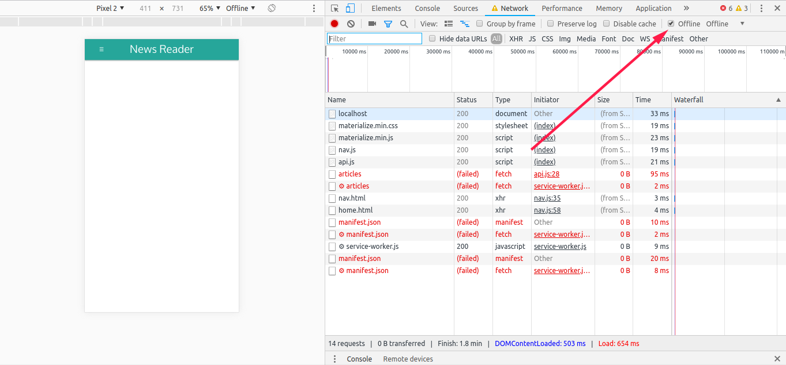
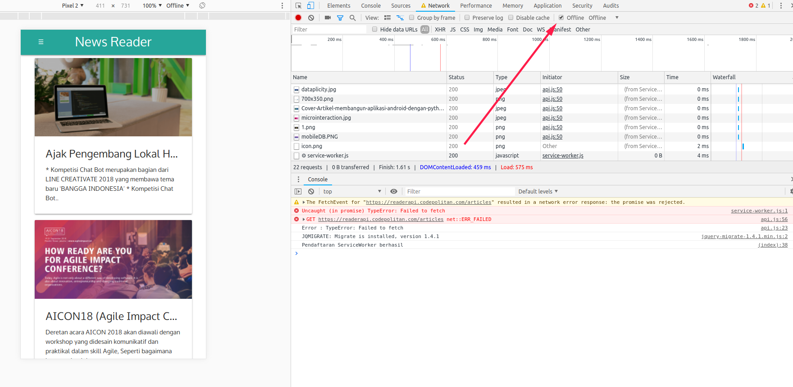
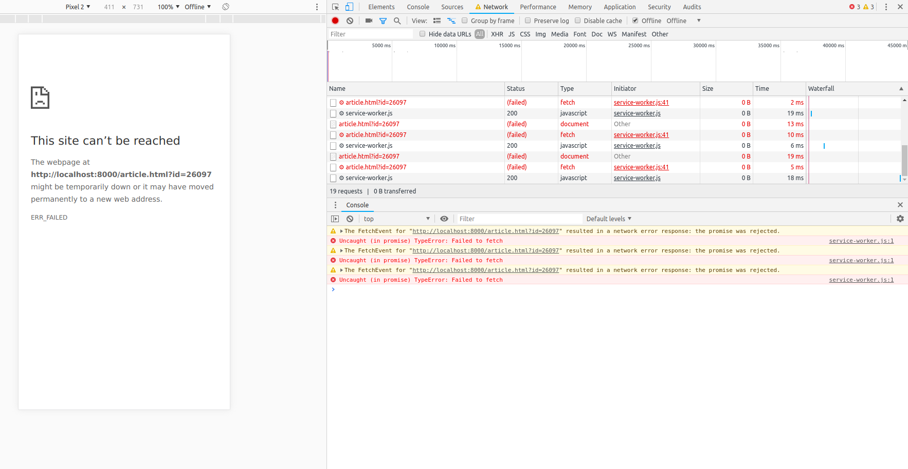

Apa itu Dicoding Point?

Pada codelab ini kita akan melanjutkan aplikasi First PWA yang sudah dibuat di bab 2. Kita akan menambahkan satu menu untuk menampilkan halaman daftar artikel yang mengonsumsi data JSON dari sebuah API menggunakan Fetch. Kita akan manfaatkan aplikasi First PWA yang sudah memiliki App Shell. Dari halaman daftar artikel ini pengguna bisa menampilkan halaman yang menampilkan konten detail masing-masing artikel.
Salin folder first-pwa dan ubah menjadi news-reader. Modifikasi tag title dan nama brand di index.html:
<!DOCTYPE html><html lang="en"><head><meta charset="UTF-8" /><title>News Reader</title><meta name="description" content="My first PWA" /><meta name="viewport" content="width=device-width, initial-scale=1" /><link rel="stylesheet" href="css/materialize.min.css" /><link rel="manifest" href="/manifest.json" /><meta name="theme-color" content="#00897B" /></head><body><!-- Navigasi --><nav class="teal lighten-1" role="navigation"><div class="nav-wrapper container"><a href="#" class="brand-logo" id="logo-container">News Reader</a><a href="#" class="sidenav-trigger" data-target="nav-mobile">☰</a><ul class="topnav right hide-on-med-and-down"></ul><ul class="sidenav" id="nav-mobile"></ul></div></nav><!-- Akhir Navigasi -->
Selanjutnya ktia perlu menambahkan elemen div sebagai tempat bernaung komponen card untuk menampilkan artikel-artikel yang nantinya akan dikonsumsi dari sebuah API. Tambahkan komponen div ini di bawah di dalam home.html:
<div class="row"><div class="col s12 m7" id="articles"><!-- Card berisi artikel akan disisipkan ke dalam sini. --></div></div>
Berikutnya, kita tulis kode-kode untuk membaca teks JSON dari server lalu mengubahnya ke array JavaScript. Buat sebuah file baru bernama api.js, simpan ke dalam folder js dan tambahkan blok-blok kode fetch berikut.
var base_url = "https://readerapi.codepolitan.com/";// Blok kode yang akan di panggil jika fetch berhasilfunction status(response) {if (response.status !== 200) {console.log("Error : " + response.status);// Method reject() akan membuat blok catch terpanggilreturn Promise.reject(new Error(response.statusText));} else {// Mengubah suatu objek menjadi Promise agar bisa "di-then-kan"return Promise.resolve(response);}}// Blok kode untuk memparsing json menjadi array JavaScriptfunction json(response) {return response.json();}// Blok kode untuk meng-handle kesalahan di blok catchfunction error(error) {// Parameter error berasal dari Promise.reject()console.log("Error : " + error);}// Blok kode untuk melakukan request data jsonfunction getArticles() {fetch(base_url+ "articles").then(status).then(json).then(function(data) {// Objek/array JavaScript dari response.json() masuk lewat data.// Menyusun komponen card artikel secara dinamisvar articlesHTML = "";data.result.forEach(function(article) {articlesHTML += `<div class="card"><a href="./article.html?id=${article.id}"><div class="card-image waves-effect waves-block waves-light"><img src="${article.thumbnail}" /></div></a><div class="card-content"><span class="card-title truncate">${article.title}</span><p>${article.description}</p></div></div>`;});// Sisipkan komponen card ke dalam elemen dengan id #contentdocument.getElementById("articles").innerHTML = articlesHTML;}).catch(error);}
Kode-kode fetch yang sebelumnya kita tulis untuk membaca teks JSON dari server kita tuliskan kembali ke dalam blok script di atas. Perbedaannya, blok fetch kita masukkan ke dalam sebuah fungsi bernama getArticles(url). Tujuan penulisan fungsi ini agar blok fetch bisa dipanggil berulang kali dengan mengirimkan URL yang berbeda (misalnya untuk kebutuhan pagination).
Di pembahasan sebelumnya kita hanya mencetak data yang dibaca dari teks JSON dari API ke jendela Console di Developer Tools. Pengguna biasa tentu tidak akan mengintip jendela Console untuk melihat data yang mereka inginkan. Oleh karena kita gantikan perintah console.log() dengan kode-kode HTML yang akan menampilkan artikel dari website Codepolitan dalam komponen card untuk kemudian disisipkan ke dalam elemen div yang telah disiapkan.
Pembaca perlu memperhatikan bahwa di bagian yang ditunjukkan oleh kode di bawah kita menggunakan backtick (tombol ini biasanya berada di sebelah kiri angka 1 dan di atas tombol TAB). Karakter backtick ini dikenal juga sebagai template literals dalam bahasa pemrograman JavaScript. Backtick memungkinkan kita untuk bisa menyisipkan string dengan karakter khusus juga dapat menyisipkan isi variabel tanpa concatenation (penggabungan string dengan variabel biasa menggunakan tanda +).
articlesHTML += `<div class="card"><div class="card-image waves-effect waves-block waves-light"><img src="${article.thumbnail}" /></div><div class="card-content"><span class="card-title truncate">${article.title}</span><p>${article.description}</p></div></div>`;
Setelah komponen card sudah menyusun artikel-artikel dari array data.result ke dalam variabel articlesHTML, selanjutnya kita sisipkan ke dalam elemen div yang sudah disiapkan menggunakan perintah document.getElementById('articles').innerHTML = articlesHTML;.
Untuk menampilkan artikel-artikel dari server secara otomatis saat halaman ini pertama kali dimuat, kita panggil fungsi getArticles() di bagian paling bawah blok script di bawah bawah deklarasi serviceWorker.
<script>// REGISTER SERVICE WORKERif ("serviceWorker" in navigator) {window.addEventListener("load", function() {navigator.serviceWorker.register("/service-worker.js").then(function() {console.log("Pendaftaran ServiceWorker berhasil");}).catch(function() {console.log("Pendaftaran ServiceWorker gagal");});});} else {console.log("ServiceWorker belum didukung browser ini.");}// REQUEST API UNTUK PERTAMA KALIdocument.addEventListener("DOMContentLoaded", function() {getArticles();});</script>
Penambahan listener untuk event DOMContentLoaded adalah untuk memastikan bahwa fungsi getArticles dipanggil hanya saat seluruh konten DOM termuat (untuk memastikan juga bahwa halaman home tempat div ber-id articles sudah termuat juga). Fungsi getArticles hanya bisa dipanggil apabila sudah di impor ke halaman ini, oleh karena itu tambahkan baris untuk mengimpornya di bawah impor materialized.min.js.
- <script type="text/javascript" src="https://unpkg.com/snarkdown@1.0.2/dist/snarkdown.umd.js"></script>
- <script src="js/materialize.min.js"></script>
- <script src="js/api.js"></script>
Jangan lupa juga untuk menambahkan berkas api.js ke dalam urlsToCache:
var urlsToCache = ["/","/nav.html","/index.html","/pages/home.html","/pages/about.html","/pages/contact.html","/css/materialize.min.css","/js/materialize.min.js","/js/nav.js","/js/api.js", // tambahkan ini"/icon.png"];
Coba buka kembali aplikasi yang sudah diperbarui dan pastikan ada artikel-artikel yang ditampilkan.
Setelah berhasil menampilkan daftar artikel, sekarang mari tambahkan halaman detail untuk membaca konten artikel yang dipilih. Modifikasi isi blok <div class="card"> dengan menambah tag a yang nantinya membawa pengguna ke halaman detail artikel:
<a href="./article.html?id=${article.id}"><div class="card-image waves-effect waves-block waves-light"><img src="${article.thumbnail}" /></div></a>
Kita belum memiliki berkasarticle.html, jadi mari buat berkas ini di dalam folder utama, satu level dengan index.html. Di sini kita mengganti gambar hamburger icon dengan panah ke kiri.
<!DOCTYPE html><html lang="en"><head><meta charset="UTF-8" /><title>News Reader</title><meta name="description" content="My first PWA" /><meta name="viewport" content="width=device-width, initial-scale=1" /><link rel="stylesheet" href="css/materialize.min.css" /><link rel="manifest" href="/manifest.json" /><meta name="theme-color" content="#00897B" /><link href="https://fonts.googleapis.com/icon?family=Material+Icons" rel="stylesheet"></head><body><!-- Navigasi --><nav class="teal lighten-1" role="navigation"><div class="nav-wrapper container"><a href="#" class="brand-logo" id="logo-container">News Reader</a><a href="./index.html" class="sidenav-trigger" data-target="nav-mobile"><i class="material-icons">arrow_back</i></a><ul class="topnav right hide-on-med-and-down"></ul><ul class="sidenav" id="nav-mobile"></ul></div></nav><!-- Akhir Navigasi --><div class="container" id="body-content"></div><scripttype="text/javascript"src="https://unpkg.com/snarkdown@1.0.2/dist/snarkdown.umd.js"></script><script src="js/materialize.min.js"></script><script src="js/api.js"></script><script>// REGISTER SERVICE WORKERif ("serviceWorker" in navigator) {window.addEventListener("load", function() {navigator.serviceWorker.register("/service-worker.js").then(function() {console.log("Pendaftaran ServiceWorker berhasil");}).catch(function() {console.log("Pendaftaran ServiceWorker gagal");});});} else {console.log("ServiceWorker belum didukung browser ini.");}</script></body></html>
Di halaman detail kita mengganti gambar ikon hamburger dengan tombol panah yang mengarah kembali ke berkas index.html. Kita juga menghapus baris import script nav.js karena tidak dipakai di halaman ini.
Setelah menyiapkan halaman detail artikel, selanjutnya kita perbarui berkasapi.js dengan menambahkan fungsi untuk mengunduh detail artikel. Tambahkan blok berikut di bawah deklarasi fungsi getArticles().
function getArticleById() {// Ambil nilai query parameter (?id=)var urlParams = new URLSearchParams(window.location.search);var idParam = urlParams.get("id");fetch(base_url + "article/" + idParam).then(status).then(json).then(function(data) {// Objek JavaScript dari response.json() masuk lewat variabel data.console.log(data);// Menyusun komponen card artikel secara dinamisvar articleHTML = `<div class="card"><div class="card-image waves-effect waves-block waves-light"><img src="${data.result.cover}" /></div><div class="card-content"><span class="card-title">${data.result.post_title}</span>${snarkdown(data.result.post_content)}</div></div>`;// Sisipkan komponen card ke dalam elemen dengan id #contentdocument.getElementById("body-content").innerHTML = articleHTML;});}
Fungsi snarkdown() di atas berasal dari library Snarkdown yang telah diimpor di berkas article.html di atas deklarasi untuk mengimpor materialize.min.js.
Terakhir tambahkan pemanggilan fungsi getArticleById() di bawah deklarasi serviceWorker file article.html sama seperti saat pemanggilan fungsi getArticles().
<script>// REGISTER SERVICE WORKERif ("serviceWorker" in navigator) {window.addEventListener("load", function() {navigator.serviceWorker.register("/service-worker.js").then(function() {console.log("Pendaftaran ServiceWorker berhasil");}).catch(function() {console.log("Pendaftaran ServiceWorker gagal");});});} else {console.log("ServiceWorker belum didukung browser ini.");}document.addEventListener("DOMContentLoaded", function() {getArticleById();});</script>
Kemudian, sebelum mencoba memuat halaman detail artikel, tambahkan dulu berkasarticle.html ke urlsToCache.
var urlsToCache = ["/","/nav.html","/index.html","/article.html", // tambahkan ini"/pages/home.html","/pages/about.html","/pages/contact.html","/css/materialize.min.css","/js/materialize.min.js","/js/nav.js","/js/api.js","/icon.png"];
Refresh ulang aplikasi News Reader kita lalu coba klik salah satu artikel untuk melihat halaman detail. Jangan lupa untuk mengaktifkan update on reload atau ubah nama cache.
Sampai langkah ini, aplikasi web kita sudah bisa berjalan dengan baik karena sudah dapat mengonsumsi data JSON serta menampilkannya dalam bentuk list atau detail. Sekarang coba aktifkan mode Offline di Developer Tools lalu lakukan muat ulang halaman.

Aplikasi gagal menampilkan daftar artikel karena tidak adanya koneksi internet, namun struktur aplikasi masih terlihat karena sebelumnya sudah kita simpan ke dalam cache secara manual memanfaatkan arsitektur App Shell.
Agar pengguna tidak mendapatkan halaman kosong saat koneksi internet tidak tersedia, kita akan mengaplikasikan penyimpanan cache secara dinamis. Pertama, aplikasi News Reader akan memeriksa cache dan mengambil data yang tersimpan jika ada sambil melakukan permintaan request baru ke server.
Buka berkasservice-worker.js lalu perbarui blok fetch menjadi:
self.addEventListener("fetch", function(event) {var base_url = "https://readerapi.codepolitan.com/";if (event.request.url.indexOf(base_url) > -1) {event.respondWith(caches.open(CACHE_NAME).then(function(cache) {return fetch(event.request).then(function(response) {cache.put(event.request.url, response.clone());return response;})}));} else {event.respondWith(caches.match(event.request).then(function(response) {return response || fetch (event.request);}))}});
Yang kita lakukan pertama kali adalah memeriksa apakah fetch saat ini meminta data dari api (url yang diminta mengandung isi base_url). Method indexOf akan mengembalikan nilai -1 jika base_url tidak ada di request saat ini dan akan bernilai lebih dari -1 jika url yang diminta mengandung isi base_url.
Apabila user meminta data dari api, maka lanjutkan operasi fetch yang hasilnya langsung di simpan ke dalam cache. Jika user tidak meminta data dari api, maka artinya user sedang meminta halaman application shell (di dalam blok else), sehingga ambil langsung app shell tersebut dari dalam cache.
Berikutnya, modifikasi fungsi getArticles() di file api.js untuk memuat data dari cache terlebih dahulu sebelum melakukan request ke server api. Tambahkan blok tersebut sebelum melakukan fetch sebagai berikut.
function getArticles() {if ('caches' in window) {caches.match(base_url + "articles").then(function(response) {if (response) {response.json().then(function (data) {var articlesHTML = "";data.result.forEach(function(article) {articlesHTML += `<div class="card"><a href="./article.html?id=${article.id}"><div class="card-image waves-effect waves-block waves-light"><img src="${article.thumbnail}" /></div></a><div class="card-content"><span class="card-title truncate">${article.title}</span><p>${article.description}</p></div></div>`;});// Sisipkan komponen card ke dalam elemen dengan id #contentdocument.getElementById("articles").innerHTML = articlesHTML;})}})}fetch(base_url + "articles").then(status).then(json).then(function(data) {// Isi disembunyikan agar lebih ringkas}}
Muat ulang halaman utama kita, kemudian aktifkan mode offline. Sekarang pengguna tetap bisa melihat-lihat daftar artikel meskipun tanpa koneksi internet.

Setelah memastikan pengguna bisa melihat daftar artikel saat tidak ada koneksi internet, sekarang klik salah satu artikel. Oops, this site can't be reached, padahal article.html sudah didefinisikan di dalam urlsToCache. Mengapa terjadi?

Halaman ini muncul karena url http://localhost:8000/article.html?id=26097 memiliki query parameter diujungnya. Fetch menganggap url ini berbeda dengan yang tersimpan di urlsToCache. Untuk mengatasinya, perbarui blok else di menjadi:
} else {event.respondWith(caches.match(event.request, { ignoreSearch: true }).then(function(response) {return response || fetch (event.request);}))}
Kini halaman detail sudah bekerja dengan seharusnya yaitu menampilkan app shell saat user tidak memiliki koneksi Internet. Akan tetapi, data yang diambil dari server masih belum di tampilkan dengan benar saat pengguna offline. Langkah selanjutnya yang perlu kita lakukan adalah memperbarui blok fungsi getArticleById() di api.js.
Sampai di langkah ini seharusnya pengguna sudah bisa mempergunakan News Reader saat sedang offline. Jika ada artikel yang tidak bisa dibaca, pastikan sudah pernah memuatnya setidaknya satu kali agar terdapat cache yang bisa dipakai saat offline.
Codelab ini dapat Anda unduh pada tautan berikut ini :